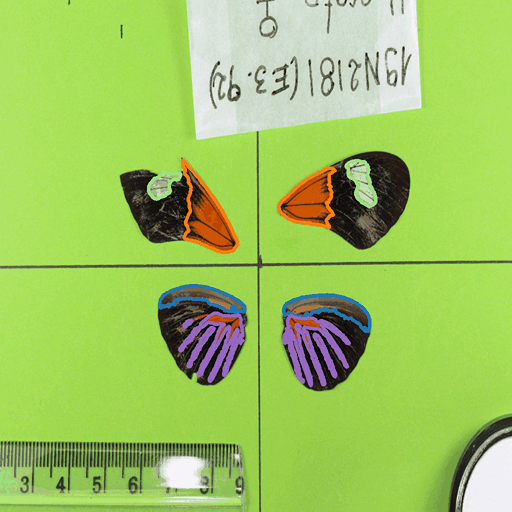

I'm a first-year Ph.D. student in Computer Science at the University of California, Irvine, advised by Prof. Unnat Jain. My research centers on computer vision and robotics, with broader interests in machine learning for perception and embodied intelligence. Previously, I completed my B.S. in Computer Science & Engineering at The Ohio State University, where I had the fortune to work with Prof. Wei-Lun (Harry) Chao on projects in autonomous driving and AI for science.

News 📰
09/2025: I started my Ph.D. journey in ML/Robotics in UC Irvine!
04/2025: Nominated for Undergraduate Student Research Award!
03/2025: 2 works accepted in CVPR 2025!
01/2025: Our work on collaborative driving and label-efficient learning are accepted to ICLR 2025!
Projects 🔨
-

Buckeye AutoDrive
A four year program to achieve L4 autonomous driving vehicle.
-

Imageomics
Machine learning on biological image data to accelerate trait analysis, discovery, and public engagement in science.
Publications ✍️
Learning 3D Perception from Others' Predictions
Jinsu Yoo, Zhenyang Feng, Tai-Yu Pan, Yihong Sun, Cheng Perng Phoo, Xiangyu Chen, Mark Campbell, Kilian Q Weinberger, Bharath Hariharan, Wei-Lun Chao
International Conference on Learning Representations (ICLR), 2025
Static Segmentation by Tracking: A Frustratingly Label-Efficient Approach to Fine-Grained Segmentation
Zhenyang Feng, Zihe Wang, Saul Ibaven Bueno, Tomasz Frelek, Advikaa Ramesh, Jingyan Bai, Lemeng Wang, Jianyang Gu, Zanming Huang, Jinsu Yoo, Tai-Yu Pan, Arpita Chowdhury, Michelle Ramirez, Elizabeth G Campolongo, Matthew J Thompson, Christopher G. Lawrence, Sydne Record, Neil Rosser, Anuj Karpatne, Daniel Rubenstein, Hilmar Lapp, Charles V. Stewart, Tanya Berger-Wolf, Yu Su, Wei-Lun Chao
arXiv Preprint

Transfer Your Perspective: Controllable 3D Generation from Any Viewpoint in a Driving Scene
Tai-Yu Pan, Sooyoung Jeon, Mengdi Fan, Jinsu Yoo, Zhenyang Feng, Mark Campbell, Kilian Q Weinberger, Bharath Hariharan, Wei-Lun Chao
IEEE / CVF Computer Vision and Pattern Recognition Conference (CVPR), 2025
Fish-Vista: A Multi-Purpose Dataset for Understanding & Identification of Traits from Images
Kazi Sajeed Mehrab, M. Maruf, Arka Daw, Abhilash Neog, Harish Babu Manogaran, Mridul Khurana, Zhenyang Feng, Bahadir Altintas, Yasin Bakis, Elizabeth G Campolongo, Matthew J Thompson, Xiaojun Wang, Hilmar Lapp, Tanya Berger-Wolf, Paula Mabee, Henry Bart, Wei-Lun Chao, Wasila M Dahdul, Anuj Karpatne
IEEE / CVF Computer Vision and Pattern Recognition Conference (CVPR), 2025